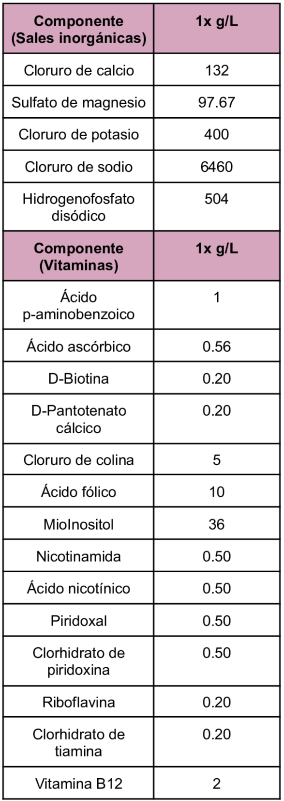
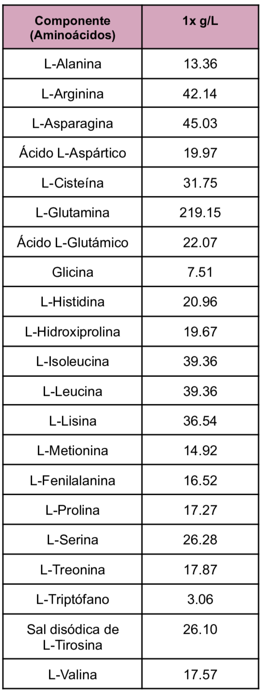
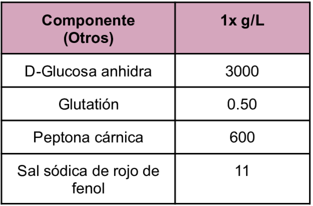
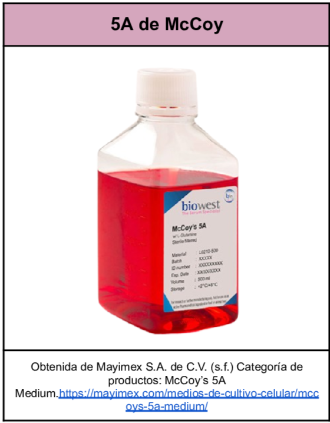

Es un medio que facilita el crecimiento y la replicación de virus en cultivos de células primarias. Es utilizada en el cultivo de líneas celulares de carcinoma de colon humano como HCT116, RKO, FET, CBS, HCT116b y TENN.
Composición
Es un medio que facilita el crecimiento y la replicación de virus en cultivos de células primarias. Es utilizada en el cultivo de líneas celulares de carcinoma de colon humano como HCT116, RKO, FET, CBS, HCT116b y TENN.
Composición



Imagen de Ejemplo

Cytion (s.f.) Medio McCoys 5A (modificado), w: 3,0 g/L Glucosa, w: Glutamina estable, w: 2,0 mM Piruvato sódico, w: 2,2 g/L NaHCO3. https://www.cytion.com/es/Medio-McCoys-5A-modificado-w-3-0-g-L-Glucosa-w-Glutamina-estable-w-2-0-mM-Piruvato-sodico-w-2-2-g-L-NaHCO3/820200a
Mayimex S.A. de C.V. (s.f.) Categoría de productos: McCoy’s 5A Medium.https://mayimex.com/medios-de-cultivo-celular/mccoys-5a-medium/